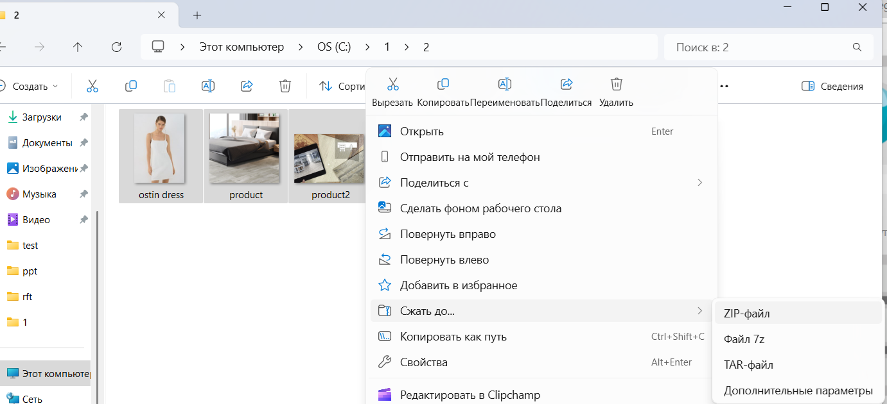
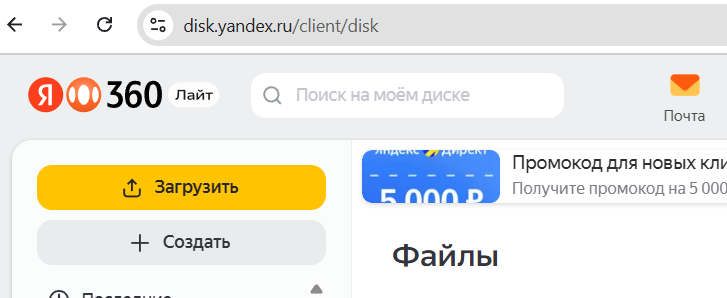
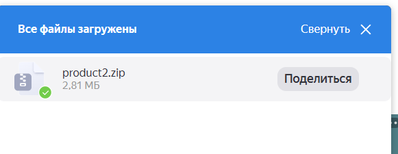

Шаг 1. Создайте zip архив через меню Windows как показано на рисунке ниже
Шаг 2. Откройте сайт Яндекс Диск. Можно из Вашей почты на Яндекс. Нажмите кнопку Загрузить и укажите файл с zip архивом из шага 1.
Шаг 3. После загрузки файла появится кнопка Поделиться. Нажмите ее.

Шаг 4. Нажмите кнопку "Скопировать", которая скопирует ссылку на архив в облаке и вставьте ее в письмо нам.
Отправьте ссылку на архив в Яндексе вместе с Эксель таблицей на Email: yasnev.andromeda@gmail.com
Укажите ИНН компании и название магазина. В ответ придет файл ключа для редактора, а продукты появятся на сайте поиска